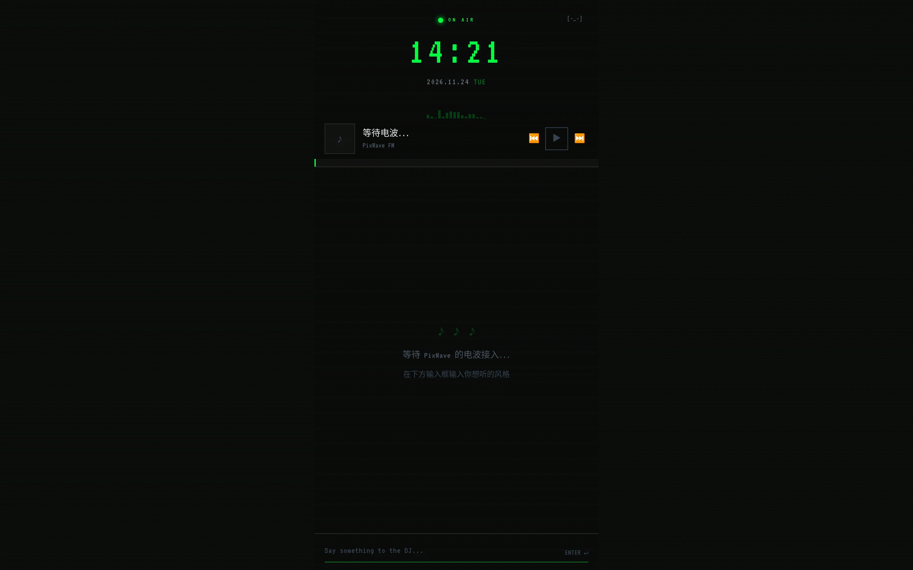
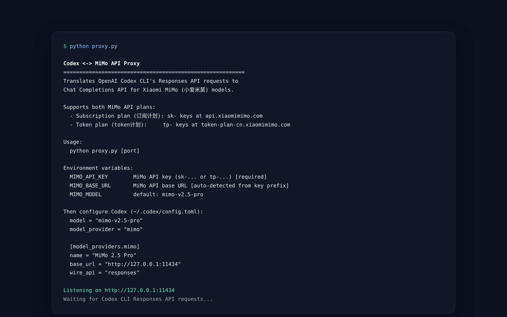
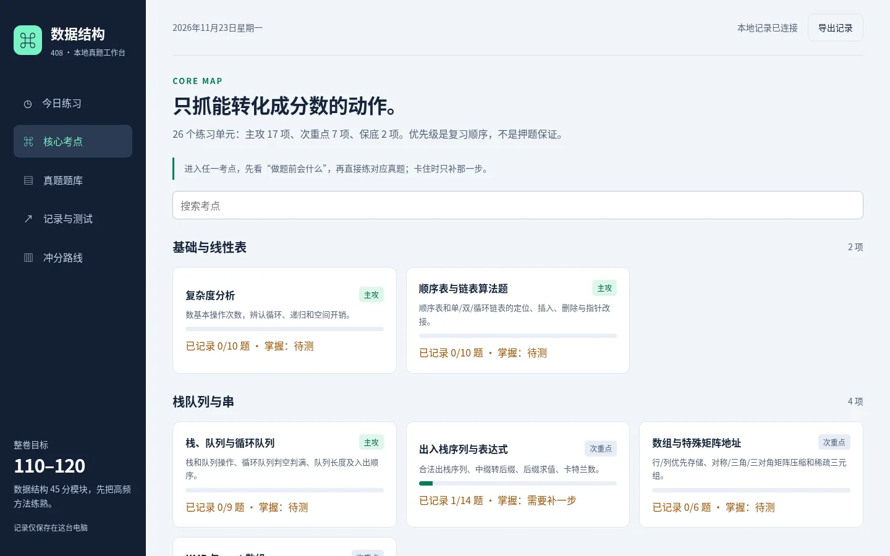

👋 关于我
你好！我是金凯奇，温州商学院信息工程学院2026届计算机科学与技术专业毕业生。 我热衷于全栈开发与AI应用，具备从零搭建完整Web系统的能力： 毕业设计基于改进的TextRank算法实现了新闻自动摘要系统（Vue 3 + Spring Boot + Python）， 独立开发了智能音乐电台 PixWave（Node.js，默认 React 18 PWA，另有 Vue 3 前端）。 在校期间均分81.13，绩点3.2，核心课程成绩优异。 我热爱用技术解决实际问题，期待在软件开发岗位上创造价值。
🎓 教育背景
温州商学院 · 信息工程学院
计算机科学与技术 本科 | 2026届
💻 专业技能
🔵 编程语言
🌐 前端开发
⚙️ 后端开发
🤖 AI / NLP
🗄️ 数据库 & 工具
🚀 项目经历
📰 新闻自动摘要系统 GitHub ↗
毕业设计项目 —— 基于改进 TextRank 算法的中文新闻摘要系统，全栈独立开发。


- 改进 TextRank：针对中文新闻倒金字塔结构，为标题句、首段、末段分别赋予 1.5×、1.3×、1.1× 位置权重
- 四维可视化：句子权重柱状图、相似度热力图、句子网络图、关键词词云，便于解释摘要是如何选出的
- 算法与业务解耦：Python 模块可经 FastAPI 提供服务，也可由 Java ProcessBuilder 调用；算法异常时回退到首尾句抽取
- 实现了登录注册、JWT 签发和 BCrypt 密码存储，以及历史记录与管理后台（用户、停用词、公告）
- 附带 ROUGE-1/2/L 评估脚本，用于对比原始与改进 TextRank
🎵 PixWave — AI 智能音乐电台 GitHub ↗
根据天气、日程和用户偏好自动策划节目单与 DJ 口播的个性化音乐电台。默认启动 React 18 PWA，另有一套 Vue 3 + Tailwind 前端。



- 后端为 Node.js / Express：组装天气（OpenWeather）、飞书日程和本地偏好，再调用 Claude 或 DeepSeek 生成节目单与 DJ 口播
- 聚合网易云、QQ 音乐、酷狗等搜歌，并可用 Fish Audio 做语音播报；用 WebSocket 推送生成流水线进度
- 未配置的第三方接口会自动降级为 mock 模式，便于在缺少部分 API Key 时完整演示
- 双前端：React 18 PWA 为默认启动端，另实现 Vue 3 + Tailwind 版本；支持定时或手动生成节目
🔌 Codex-MiMo 代理 GitHub ↗ 配置指南 ↗
把 Codex CLI 使用的 Responses API 适配到小米 MiMo 的 Chat Completions 接口，并整理了一份将 MiMo 接入 Codex 的配置说明。

- 用 Python / Flask 编写协议转换代理，把 Responses API 请求翻译为 MiMo 的 Chat Completions，并支持流式 SSE 与 tool call 转换
- 按密钥前缀区分订阅计划（sk-）与 token 计划（tp-），自动选择对应的 MiMo 接口地址
- 另写了 mimo-codex-guide，记录通过 Moon Bridge 将 MiMo 接入 Codex CLI 的配置步骤，与上述自研代理是两条可并行的接入路径
📚 408 数据结构学习工作台 GitHub ↗
面向考研 408 数据结构专项的本地练习工具，只保存题号、考点与自评记录，不复制题干或答案。


- 按考点组织练习，并根据作答情况安排 1、2、3、7 或 14 天后的复做；可生成 60 分钟混合测试，记录过程但不自动阅卷
- 纯 Python 标准库本地服务，记录保存在本机，适合自己复习时使用
📚 核心课程成绩
| 课程名称 | 学分 | 成绩 |
|---|---|---|
| 高级语言程序设计基础 | 3.0 | 93 |
| Web后端技术 | 4.0 | 88 |
| 数据库应用技术 | 4.0 | 87 |
| 软件工程 | 4.0 | 87 |
| Web前端课程设计 | 1.0 | 87 |
| Web前端框架应用 | 3.0 | 86 |
| 大数据应用技术 | 3.0 | 86 |
| 大学英语B（一） | 4.0 | 86 |
| Python数据分析与展示 | 4.0 | 84 |
| 应用系统开发综合实训 | 1.0 | 83 |
| 操作系统 | 3.0 | 81 |
| 数据结构与算法 | 4.0 | 81 |